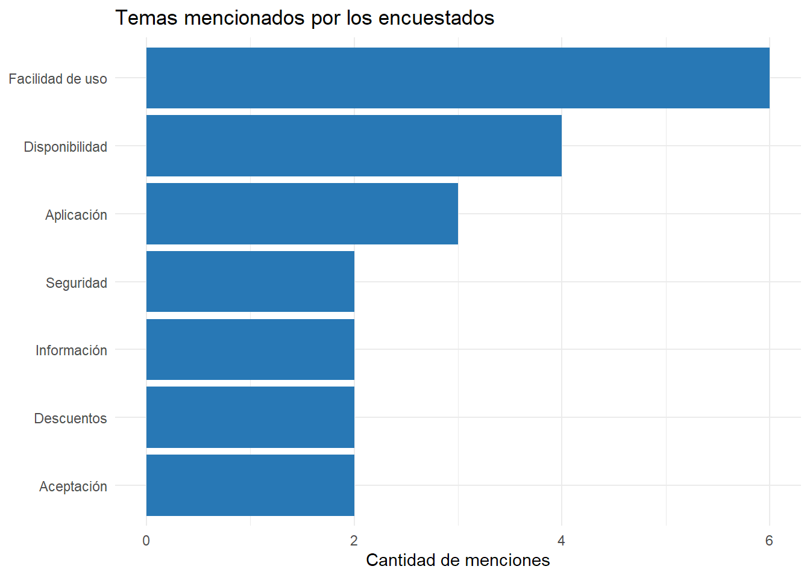
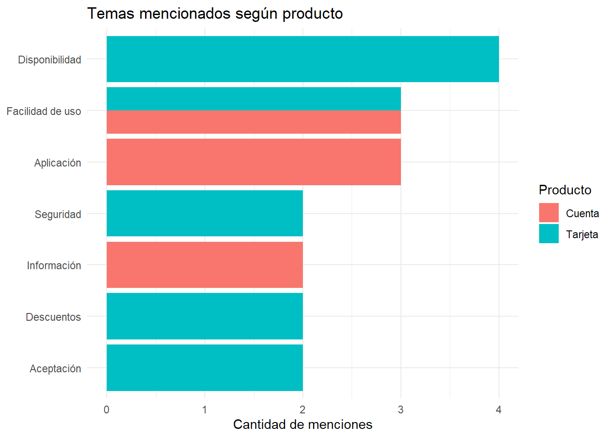
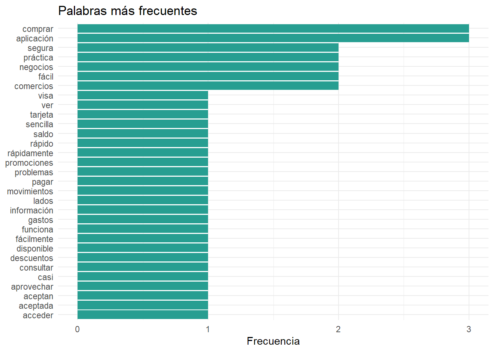
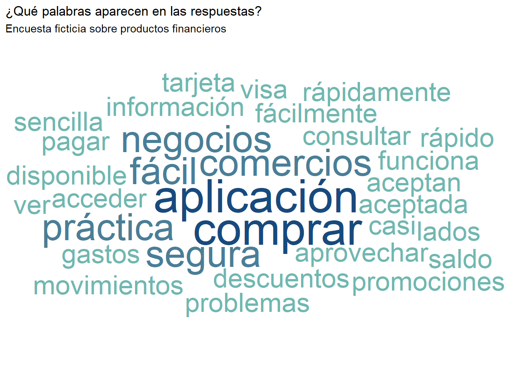

# Ejecutar una sola vez si hace falta instalar los paquetes
# install.packages(c(
# "tidyverse", "tidytext", "tm",
# "ggwordcloud", "highcharter"
# ))
library(tidyverse)
library(tidytext)
library(tm)
library(ggwordcloud)
library(highcharter)Análisis de respuestas abiertas y nubes de palabras
Objetivos de la clase
En esta clase vamos a aprender a:
- Transformar una variable de respuestas múltiples en una tabla de frecuencias.
- Procesar respuestas abiertas mediante técnicas básicas de análisis de texto.
- Crear un corpus de texto y eliminar palabras vacías (stopwords) en español.
- Construir nubes de palabras estáticas e interactivas.
Trabajaremos con una encuesta ficticia sobre productos financieros.
1. Preparación del entorno
Instalamos los paquetes necesarios una sola vez:
2. Construcción del toy dataset
Imaginemos que realizamos una encuesta a clientes y les preguntamos qué les gusta de su producto.
Tenemos dos variables importantes:
Que_le_gusta: respuesta abierta original, escrita por el encuestado.Verbatims: temas que identificó el equipo de investigación en esa respuesta. Puede haber más de un tema por persona.
encuesta <- tribble(
~Sexo, ~Edad, ~Municipio, ~Producto, ~Que_le_gusta, ~Verbatims,
"F", 45, "La Plata", "Tarjeta",
"Me gusta la tarjeta Visa porque está en todos los negocios y es fácil de usar",
"Disponibilidad, Facilidad de uso",
"M", 32, "La Plata", "Tarjeta",
"Puedo pagar en muchos comercios y no tengo problemas para comprar",
"Disponibilidad, Aceptación",
"F", 28, "Berisso", "Cuenta",
"La aplicación es sencilla y puedo consultar mi saldo rápidamente",
"Facilidad de uso, Aplicación",
"M", 51, "Ensenada", "Tarjeta",
"Es práctica, segura y la aceptan en casi todos lados",
"Facilidad de uso, Seguridad, Disponibilidad",
"F", 39, "La Plata", "Cuenta",
"Me resulta fácil de usar y puedo ver todos mis movimientos",
"Facilidad de uso, Información",
"M", 44, "Berisso", "Tarjeta",
"La uso para comprar en comercios y aprovechar descuentos",
"Descuentos, Aceptación",
"F", 35, "Ensenada", "Cuenta",
"La aplicación funciona rápido y es muy práctica",
"Aplicación, Facilidad de uso",
"M", 26, "La Plata", "Tarjeta",
"Me gusta que sea segura y aceptada en muchos negocios",
"Seguridad, Disponibilidad",
"F", 48, "Berisso", "Tarjeta",
"Puedo comprar fácilmente y acceder a promociones",
"Facilidad de uso, Descuentos",
"M", 30, "Ensenada", "Cuenta",
"La información de mis gastos está disponible en la aplicación",
"Información, Aplicación"
)
encuesta# A tibble: 10 × 6
Sexo Edad Municipio Producto Que_le_gusta Verbatims
<chr> <dbl> <chr> <chr> <chr> <chr>
1 F 45 La Plata Tarjeta Me gusta la tarjeta Visa porque est… Disponib…
2 M 32 La Plata Tarjeta Puedo pagar en muchos comercios y n… Disponib…
3 F 28 Berisso Cuenta La aplicación es sencilla y puedo c… Facilida…
4 M 51 Ensenada Tarjeta Es práctica, segura y la aceptan en… Facilida…
5 F 39 La Plata Cuenta Me resulta fácil de usar y puedo ve… Facilida…
6 M 44 Berisso Tarjeta La uso para comprar en comercios y … Descuent…
7 F 35 Ensenada Cuenta La aplicación funciona rápido y es … Aplicaci…
8 M 26 La Plata Tarjeta Me gusta que sea segura y aceptada … Segurida…
9 F 48 Berisso Tarjeta Puedo comprar fácilmente y acceder … Facilida…
10 M 30 Ensenada Cuenta La información de mis gastos está d… Informac…Cada fila representa una persona encuestada. En este ejemplo hay 10 respuestas.
3. Respuestas múltiples: tabla de frecuencias
3.1. Separar los temas
Usamos separate_rows() para convertir cada tema en una fila independiente.
temas <- encuesta |>
select(Sexo, Edad, Municipio, Producto, Verbatims) |>
separate_rows(Verbatims, sep = ",\\s*") |>
rename(tema = Verbatims)
temas# A tibble: 21 × 5
Sexo Edad Municipio Producto tema
<chr> <dbl> <chr> <chr> <chr>
1 F 45 La Plata Tarjeta Disponibilidad
2 F 45 La Plata Tarjeta Facilidad de uso
3 M 32 La Plata Tarjeta Disponibilidad
4 M 32 La Plata Tarjeta Aceptación
5 F 28 Berisso Cuenta Facilidad de uso
6 F 28 Berisso Cuenta Aplicación
7 M 51 Ensenada Tarjeta Facilidad de uso
8 M 51 Ensenada Tarjeta Seguridad
9 M 51 Ensenada Tarjeta Disponibilidad
10 F 39 La Plata Cuenta Facilidad de uso
# ℹ 11 more rowsPor ejemplo, una persona que mencionó “Disponibilidad, Facilidad de uso” pasa a tener dos filas.
Esta estructura se conoce como formato largo y facilita el cálculo de frecuencias.
3.2. Calcular frecuencias y porcentajes
frecuencias_temas <- temas |>
count(tema, name = "frecuencia", sort = TRUE) |>
mutate(
porcentaje_encuestados =
frecuencia / nrow(encuesta) * 100
)
frecuencias_temas# A tibble: 7 × 3
tema frecuencia porcentaje_encuestados
<chr> <int> <dbl>
1 Facilidad de uso 6 60
2 Disponibilidad 4 40
3 Aplicación 3 30
4 Aceptación 2 20
5 Descuentos 2 20
6 Información 2 20
7 Seguridad 2 20La frecuencia indica cuántas personas mencionaron cada tema.
El porcentaje se calcula sobre el total de encuestados. Como una persona puede mencionar varios temas, los porcentajes pueden sumar más de 100%.
Esta es una tabla de respuestas múltiples, siguiendo la lógica de la clase 7: respuestas múltiples.
3.3. Visualizar los temas más mencionados
frecuencias_temas |>
ggplot(aes(
x = reorder(tema, frecuencia),
y = frecuencia
)) +
geom_col(fill = "#2878B5") +
coord_flip() +
labs(
title = "Temas mencionados por los encuestados",
x = NULL,
y = "Cantidad de menciones"
) +
theme_minimal()
3.4. Comparar por producto
Esta comparación permite explorar si los temas mencionados difieren entre productos.
temas |>
count(Producto, tema, name = "frecuencia") |>
ggplot(aes(
x = reorder(tema, frecuencia),
y = frecuencia,
fill = Producto
)) +
geom_col(position = "dodge") +
coord_flip() +
labs(
title = "Temas mencionados según producto",
x = NULL,
y = "Cantidad de menciones",
fill = "Producto"
) +
theme_minimal()
4. Análisis de texto libre
Ahora dejamos de lado las categorías de Verbatims y analizamos las palabras que aparecen en Que_le_gusta.
La diferencia es importante:
- Análisis temático: contamos categorías definidas por el equipo de investigación.
- Análisis de palabras: contamos términos que efectivamente aparecen en las respuestas abiertas.
4.1. Preparar los documentos
Cada respuesta será un documento identificado mediante id.
documentos <- encuesta |>
mutate(
id = row_number(),
texto = Que_le_gusta
) |>
select(id, Producto, texto)
documentos# A tibble: 10 × 3
id Producto texto
<int> <chr> <chr>
1 1 Tarjeta Me gusta la tarjeta Visa porque está en todos los negocios y …
2 2 Tarjeta Puedo pagar en muchos comercios y no tengo problemas para com…
3 3 Cuenta La aplicación es sencilla y puedo consultar mi saldo rápidame…
4 4 Tarjeta Es práctica, segura y la aceptan en casi todos lados
5 5 Cuenta Me resulta fácil de usar y puedo ver todos mis movimientos
6 6 Tarjeta La uso para comprar en comercios y aprovechar descuentos
7 7 Cuenta La aplicación funciona rápido y es muy práctica
8 8 Tarjeta Me gusta que sea segura y aceptada en muchos negocios
9 9 Tarjeta Puedo comprar fácilmente y acceder a promociones
10 10 Cuenta La información de mis gastos está disponible en la aplicación 4.2. Crear el corpus con tm
Un corpus es una colección de documentos de texto que podemos procesar de manera conjunta, lo que en socio identificábamos como texto único.
corpus <- VCorpus(
VectorSource(documentos$texto)
)
inspect(corpus[1:2])<<VCorpus>>
Metadata: corpus specific: 0, document level (indexed): 0
Content: documents: 2
[[1]]
<<PlainTextDocument>>
Metadata: 7
Content: chars: 77
[[2]]
<<PlainTextDocument>>
Metadata: 7
Content: chars: 65Ahora aplicamos algunas operaciones básicas de limpieza al corpus con la librería tm:
corpus_limpio <- corpus |>
tm_map(content_transformer(tolower)) |>
tm_map(removePunctuation) |>
tm_map(removeNumbers) |>
tm_map(stripWhitespace)
inspect(corpus_limpio[1:2])<<VCorpus>>
Metadata: corpus specific: 0, document level (indexed): 0
Content: documents: 2
[[1]]
<<PlainTextDocument>>
Metadata: 7
Content: chars: 77
[[2]]
<<PlainTextDocument>>
Metadata: 7
Content: chars: 65¿Qué hicimos?
tolower(): pasamos todo a minúsculas.removePunctuation(): eliminamos signos de puntuación.removeNumbers(): eliminamos números.stripWhitespace(): reducimos espacios innecesarios.
La limpieza facilita que una palabra no quede duplicada por diferencias de mayúsculas o puntuación.
4.3. Obtener las stopwords en español
Las stopwords son palabras frecuentes que suelen aportar poco para distinguir los temas del texto, como “de”, “la”, “que”, “y” o “en”.
Podemos obtener una lista en español con tm:
stop_es <- tm::stopwords("spanish")
head(stop_es, 30) [1] "de" "la" "que" "el" "en" "y" "a" "los"
[9] "del" "se" "las" "por" "un" "para" "con" "no"
[17] "una" "su" "al" "lo" "como" "más" "pero" "sus"
[25] "le" "ya" "o" "este" "sí" "porque"La lista puede variar según la versión del paquete y no siempre incluye todas las expresiones que queremos excluir.
Podemos ampliarla con palabras propias de nuestro problema:
stop_es <- unique(c(
stop_es,
"me", "gusta", "gustan",
"porque", "puedo", "puede",
"tengo", "tiene", "todos",
"todo", "muy", "resulta",
"usar", "uso"
))En un análisis real, conviene revisar las respuestas y adaptar esta lista al lenguaje de los encuestados. No deberíamos eliminar automáticamente palabras relevantes para el objetivo de investigación.
4.4. Eliminar stopwords del corpus
corpus_sin_stopwords <- tm_map(
corpus_limpio,
removeWords,
stop_es
)
inspect(corpus_sin_stopwords[1:2])<<VCorpus>>
Metadata: corpus specific: 0, document level (indexed): 0
Content: documents: 2
[[1]]
<<PlainTextDocument>>
Metadata: 7
Content: chars: 39
[[2]]
<<PlainTextDocument>>
Metadata: 7
Content: chars: 40Podemos inspeccionar cómo quedó una respuesta antes y después de la limpieza:
cat("Texto original:\n")Texto original:cat(documentos$texto[1], "\n\n")Me gusta la tarjeta Visa porque está en todos los negocios y es fácil de usar cat("Texto procesado:\n")Texto procesado:cat(as.character(corpus_sin_stopwords[[1]])) tarjeta visa negocios fácil 4.5. Pasar el corpus a formato tidy
tidytext permite convertir el corpus en una tabla donde cada fila representa una palabra.
# Convertir el corpus en un tibble con un documento por fila
documentos_limpios <- tibble(
id = seq_along(corpus_sin_stopwords),
texto = sapply(
corpus_sin_stopwords,
tm::content,
USE.NAMES = FALSE
)
)
# Separar el texto en palabras
palabras <- documentos_limpios |>
unnest_tokens(
output = word,
input = texto
) |>
mutate(word = str_to_lower(word)) |>
filter(
str_detect(word, "^[[:alpha:]]+$"),
!word %in% stop_es,
str_length(word) > 2
)
palabras# A tibble: 40 × 2
id word
<int> <chr>
1 1 tarjeta
2 1 visa
3 1 negocios
4 1 fácil
5 2 pagar
6 2 comercios
7 2 problemas
8 2 comprar
9 3 aplicación
10 3 sencilla
# ℹ 30 more rows¿Qué es lo que hacemos en estos pasos? sapply() extrae el texto de cada documento sin necesidad de crear una función especial. unnest_tokens() separa cada respuesta en palabras. filter() elimina stopwords y términos que no cumplen los criterios de limpieza.
Esto convierte el texto en una estructura tabular que podemos analizar con dplyr como cualquier otra tabla de la vida.
5. Frecuencia de palabras
Contamos cuántas veces aparece cada término:
frecuencias_palabras <- palabras |>
count(word, sort = TRUE, name = "n")
frecuencias_palabras# A tibble: 31 × 2
word n
<chr> <int>
1 aplicación 3
2 comprar 3
3 comercios 2
4 fácil 2
5 negocios 2
6 práctica 2
7 segura 2
8 acceder 1
9 aceptada 1
10 aceptan 1
# ℹ 21 more rowsPara ver las 20 palabras más frecuentes:
frecuencias_palabras |>
slice_max(n, n = 20) |>
ggplot(aes(
x = reorder(word, n),
y = n
)) +
geom_col(fill = "#279E91") +
coord_flip() +
labs(
title = "Palabras más frecuentes",
x = NULL,
y = "Frecuencia"
) +
theme_minimal()
Antes de interpretar los resultados, conviene revisar si aparecen sinónimos, errores de escritura o palabras que deberían agruparse. Por ejemplo, “comercio” y “comercios” podrían representar un mismo concepto, pero esa decisión depende del análisis.
6. Nube de palabras con ggwordcloud
Una nube de palabras representa visualmente la frecuencia de los términos: las palabras más frecuentes suelen aparecer con mayor tamaño.
Seleccionamos las 40 palabras más frecuentes:
datos_nube <- frecuencias_palabras |>
slice_max(n, n = 40, with_ties = FALSE)
set.seed(123)
ggplot(
datos_nube,
aes(
label = word,
size = n,
color = n
)
) +
geom_text_wordcloud(
rm_outside = TRUE,
grid_size = 4
) +
scale_size_area(max_size = 16) +
scale_color_gradient(
low = "#70B7B0",
high = "#174A7E"
) +
labs(
title = "¿Qué palabras aparecen en las respuestas?",
subtitle = "Encuesta ficticia sobre productos financieros"
) +
theme_minimal()
geom_text_wordcloud() distribuye las palabras para reducir las superposiciones. scale_size_area() ayuda a representar la frecuencia mediante el tamaño.
La semilla aleatoria (set.seed) permite obtener una disposición reproducible en condiciones equivalentes. La posición de las palabras no representa una relación semántica ni causal.
7. Nube de palabras interactiva con highcharter
Ahora generamos una versión interactiva. Podemos utilizar el mismo conteo de palabras y mapear:
name: el texto que se muestra.weight: el peso que determina el tamaño relativo de la palabra.
datos_highcharter <- datos_nube |>
mutate(
peso = log1p(n)
)
hchart(
datos_highcharter,
type = "wordcloud",
hcaes(
name = word,
weight = peso
)
) |>
hc_title(
text = "Nube de palabras de respuestas abiertas"
) |>
hc_subtitle(
text = "Tamaño relativo según frecuencia"
)Usamos log1p(n), que equivale a ((1+n)), para reducir las diferencias de tamaño cuando algunas palabras son mucho más frecuentes que otras.
Si preferimos que el tamaño refleje directamente la frecuencia, podemos utilizar weight = n.
La disponibilidad de la visualización depende de la versión instalada de highcharter y del soporte de gráficos de tipo wordcloud. Si la versión instalada no admite este tipo, conviene actualizar el paquete y verificar sus ejemplos actuales.
8. Análisis de palabras por producto
Una posible extensión es analizar las palabras por producto:
palabras_por_producto <- documentos |>
mutate(
corpus = map(
texto,
~ VCorpus(VectorSource(.x))
)
)
# Alternativa directa para continuar en formato tidy:
palabras_producto <- documentos |>
unnest_tokens(word, texto) |>
mutate(word = str_to_lower(word)) |>
filter(
str_detect(word, "^[[:alpha:]]+$"),
!word %in% stop_es,
str_length(word) > 2
) |>
count(Producto, word, sort = TRUE)
palabras_producto# A tibble: 33 × 3
Producto word n
<chr> <chr> <int>
1 Cuenta aplicación 3
2 Tarjeta comprar 3
3 Tarjeta comercios 2
4 Tarjeta negocios 2
5 Tarjeta segura 2
6 Cuenta consultar 1
7 Cuenta disponible 1
8 Cuenta funciona 1
9 Cuenta fácil 1
10 Cuenta gastos 1
# ℹ 23 more rowsEn esta última comparación utilizamos el texto original y aplicamos la lista de stopwords y los filtros en formato tidy. Para reproducir exactamente el procesamiento del corpus anterior, también podríamos tokenizar los documentos después de limpiar corpus_sin_stopwords.